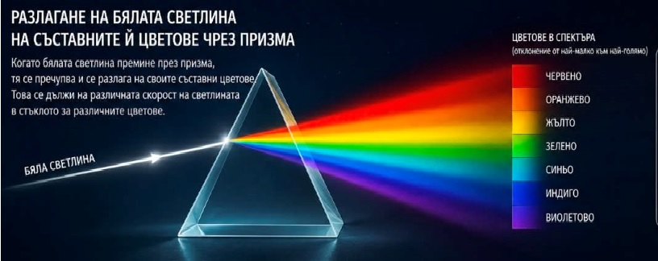
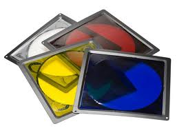
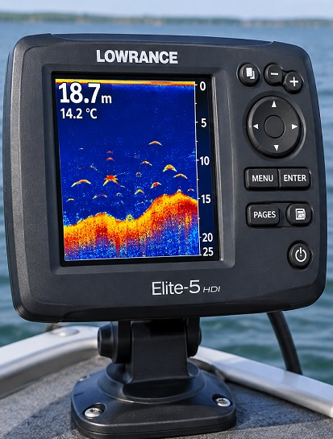
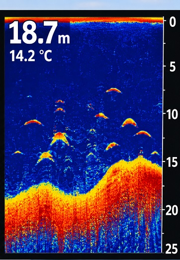
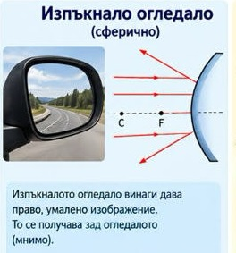

Светлина и звук
амплитуда - максимaлното отклонение на махалото от равновесното му положение
вакуум - безвъздушно пространство
вдлъбната леща - леща, която е по-тънка в средата, отколкото в края
височина на тона - качество на един тон, което се определя от неговата честота; по-голяма честота означава по-висок тон
главна оптична ос (на леща) - права, която свързва центровете на сферите, ограничаващи лещата
граничен ъгъл - ъгълът на падане на границата между оптично по-плътна и оптично по-рядка среда, при който ъгълът на пречупване е 90°
далекогледство - недостатък на окото, при който сноп успоредни лъчи се фокусира не върху, а зад ретината
действителен образ - образ, получен от пресичането на лъчи след тяхното пречупване или отражение (такъв образ може да се наблюдава върху екран)
децибел - единица за сила на звука
диоптър (озн. D) - единица за оптична сила на леща (например 1 D е силата на леща с фокусно разстояние 1 m)
допълнителен цвят - цвят, който се получава при смесване на два основни цвята
ехо - слухово възприятие, което получаваме от звук, който сме произвели и след отражението му в преграда се е върнал при нас
ехолот - уред, използван на корабите за измерване на дълбочината на водата. Разстоянието до морското дъно се определя от времето, за което ултразвуков сигнал отива до дъното и се връща до кораба
ехограф - медицински уред за изследване на вътрешните органи на човешкото тяло. Работи с ултразвук
затихване на звук - отслабване на звука при отдалечаване от източника
звук - явление, представляващо трептене на частиците на дадена среда, в която се разпространява
зеница - кръгъл отвор в средата на ириса
изпъкнала леща - леща, която е по-дебела в средата, отколкото по края
източник на звук - всяко тяло, което поражда слухово усещане
източник на светлина - всяко тяло, което излъчва светлина
инфразвук - трептения на частиците на една среда с честоти по-малки от честотите на звуците, които чува нормалното човешко ухо
ирис - най-предноразположената част на увеята и представлява отвесно разположена мембрана с кръгъл отвор в средата, наречен зеница
късогледство - недостатък на окото, при който сноп успоредни лъчи се фокусира не върху, а пред ретината
леща - оптичен елемент, който пропуска и пречупва светлината и променя сходимостта на преминаващите през нея лъчи
лъч (светлинен лъч) - тънък светлинен сноп
метроном - механичен уред с махало за определяне темпото в музиката
мираж - природно атмосферно оптично явление, при което слънчевите лъчи се пречупват различно поради различната плътност на слоевете въздух
недействителен образ - образ, получен от пресичането на продълженията на лъчи след тяхното пречупване или отражение
оптика - част от физиката, изучаваща явленията при излъчване и разпространение на светлината
оптичен център (на леща) - точката от главната оптична ос, минавайки през която лъчите не променят посоката си
перископ - уред, предназначен за наблюдаване на земната повърхност от закрити места. Състои се от кутия с две успоредни, плоски огледала под ъгъл 45° спрямо кутията
разсейвателна леща - леща, която преобразува успоредния сноп светлина в разходящ. Вдлъбната леща
ретина - тънката покривка върху задната част на окото, съставена от клетки, които „улавят" лъчите
роговица - образува предната прозрачна част на очната ябълка
светлинен сноп - светлина, излъчена от източник на светлина и преминала през тесен отвор
сферично огледало - огледало, чиято повърхност е част от сфера
събирателна леща - леща, която преобразува успоредния сноп светлина в сходящ. Изпъкнала леща
ултразвук - трептения на частиците на една среда с честоти по-големи от честотите на звуците, които чува нормалното човешко ухо
фокус (на леща) - точка, през която минава след пречупване успореден на главната оптична ос лъч
фокусиране - процесът на преместване на лещата по главната оптична ос, докато се получи ясен образ
херц - единица за честота на трептене
цветни филтри - цветни стъкла (ако е червено пропуска само червени лъчи, ако е зелено - само зелени лъчи и т. н.)
цвят на светлината - определя се от цветовете на преобладаващите в снопа едноцветни лъчи
| Мираж |
| Дъга |
| Нютон |
 |
| Спектър на светлината |
 |
| Цветни филтри |
 |
| Ехолот |
 |
| Екран на ехолот |
| Ехограф |
 |
| Ехографска снимка |
 |
| Устройство на човешко ухо |
| Очила |
 |
| Сферично огледало |
| Лупа |